MULTIMEDIA 12 · SPRINT 4 · CLASSROOM EDITION · 9 OCTOBER 2026
Work like an art director
1. Work like an art director
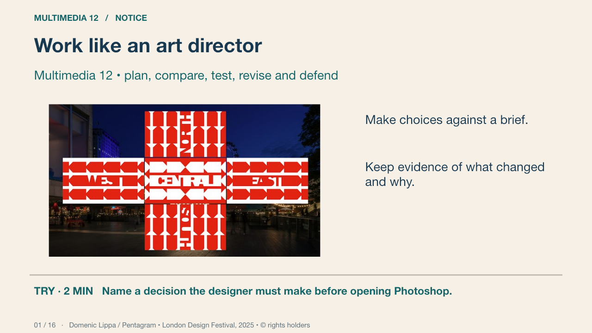
An art director connects the brief, references, visual direction, production and review. The genuine design-festival installation shows an identity meeting a public encounter. Your own community arts showcase has a defined audience and practical information. Develop distinct options and defend a reasoned choice.
Your turn: Name a decision the designer must make before opening Photoshop.
Success: Name a visible feature, use the term accurately and connect it to audience or purpose.
Domenic Lippa / Pentagram • London Design Festival, 2025 • © rights holders Primary source
2. A usable proposal
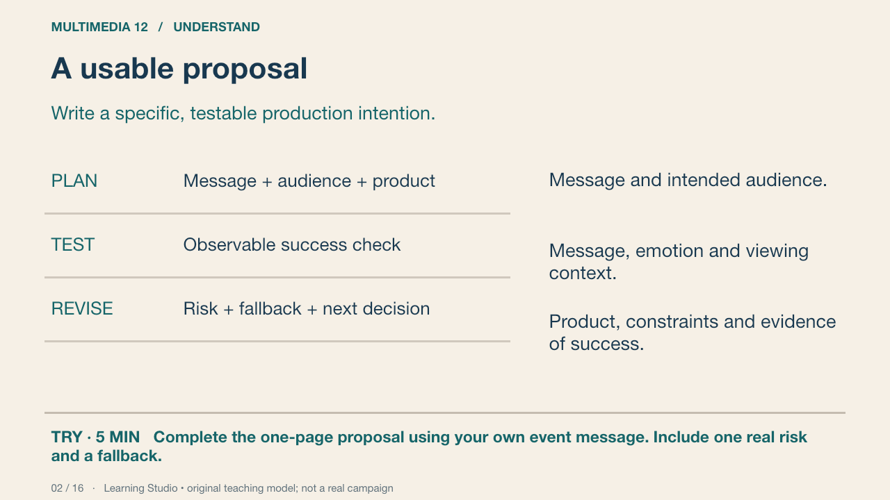
A useful goal says what will be made, for whom and how it will be tested. Worked example: create a fictional community arts-showcase poster for a corridor print, then ask viewers to identify the title, communication cue and practical details. The goal does not promise that every viewer will react identically.
Your turn: Complete the one-page proposal using your own event message. Include one real risk and a fallback.
Success: An original concept, a specific audience, attainable scope and a test connected to the communication goal.
Learning Studio • original teaching model; not a real campaign
3. Research an image; do not copy its answer
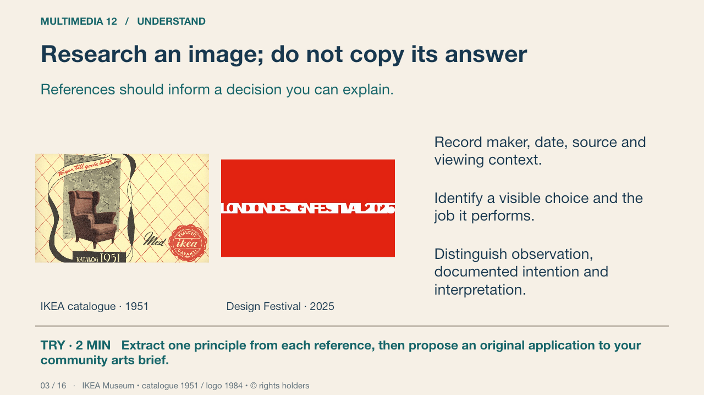
Use these genuine references to learn how designers organise images and type for different encounters. Record maker or organisation, date, source, visible form, sourced context and an interpretation. The 1951 catalogue and 2025 festival identity answer different problems. Borrow a design principle through an original arrangement; the brand graphics are study references, not permitted production assets.
Your turn: Extract one principle from each reference, then propose an original application to your community arts brief.
Success: Cultural/historical/emotional interpretation cites form and source context; the proposed design remains original.
IKEA Museum • catalogue 1951 / logo 1984 • © rights holders Primary source
4. Mood board, thumbnail and artboard
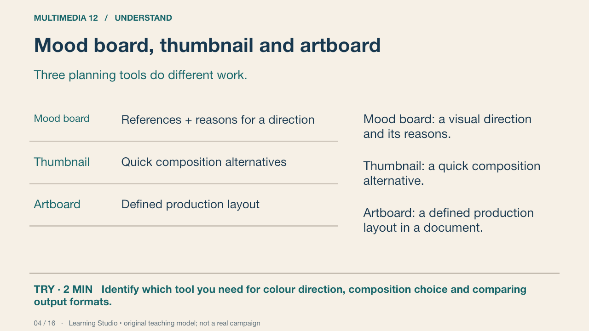
A mood board can contain image atmosphere, colour and type references. A thumbnail makes the layout visible quickly. An artboard develops a layout at a particular size. Collecting attractive images without connecting them to the brief does not establish a direction.
Your turn: Identify which tool you need for colour direction, composition choice and comparing output formats.
Success: Name a visible feature, use the term accurately and connect it to audience or purpose.
Practice feedback — open after your attempt
Use a mood board for direction, thumbnails for composition and artboards for developed layouts.
Learning Studio • original teaching model; not a real campaign
5. Build a browser mood board
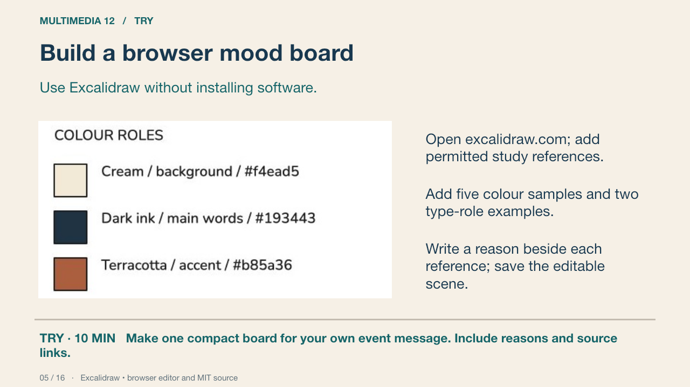
Excalidraw’s hosted editor is a free browser option with an open-source MIT-licensed codebase. This genuine browser capture comes from an earlier teaching board. Adapt its structure to your film concept. Save the editable .excalidraw scene and an image for viewing; avoid a link that classmates cannot open.
Your turn: Make one compact board for your own event message. Include reasons and source links.
Success: Every reference has a job; exact colours are recorded; the scene and viewing image are saved.
Excalidraw • browser editor and MIT source Primary source
6. Three genuinely different directions
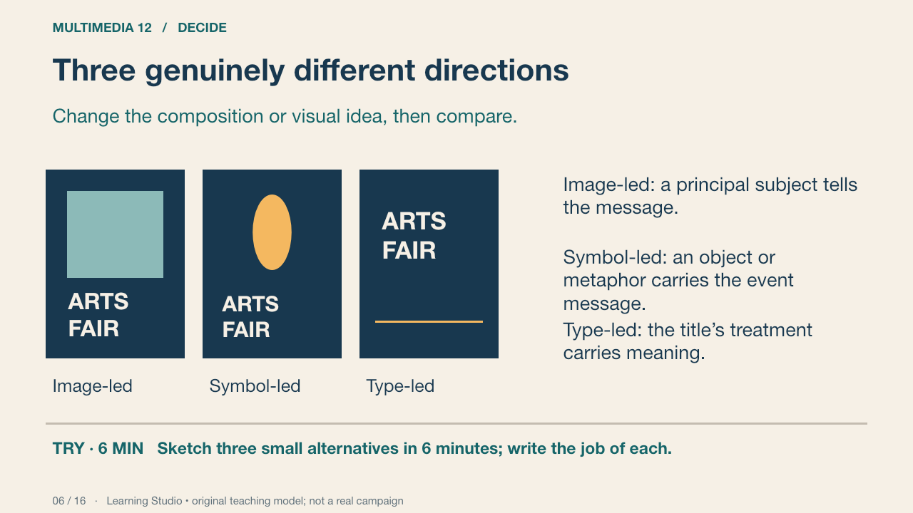
These are schematic layout alternatives, not finished posters or Photoshop UI. Three copies with different title colours are usually the same direction. You may propose other categories if the compositions differ in a meaningful way.
Your turn: Sketch three small alternatives in 6 minutes; write the job of each.
Success: Distinct arrangements or visual ideas, with the same communication problem.
Learning Studio • original teaching model; not a real campaign
7. Choose against the brief
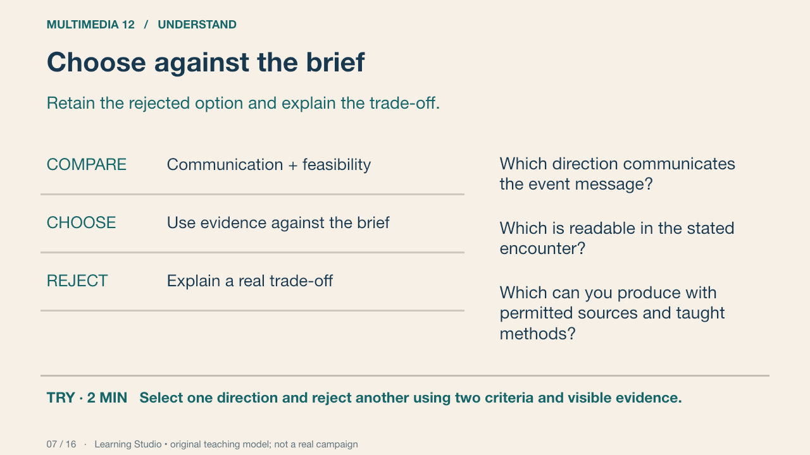
The most elaborate option may be least feasible or least clear. Compare the alternatives against a small set of criteria from your proposal. Record why one was selected and what you gave up. A preference can start the discussion but cannot finish the defence.
Your turn: Select one direction and reject another using two criteria and visible evidence.
Success: The reasons concern message, audience, reading or production constraints rather than taste alone.
Learning Studio • original teaching model; not a real campaign
8. Photoshop artboards
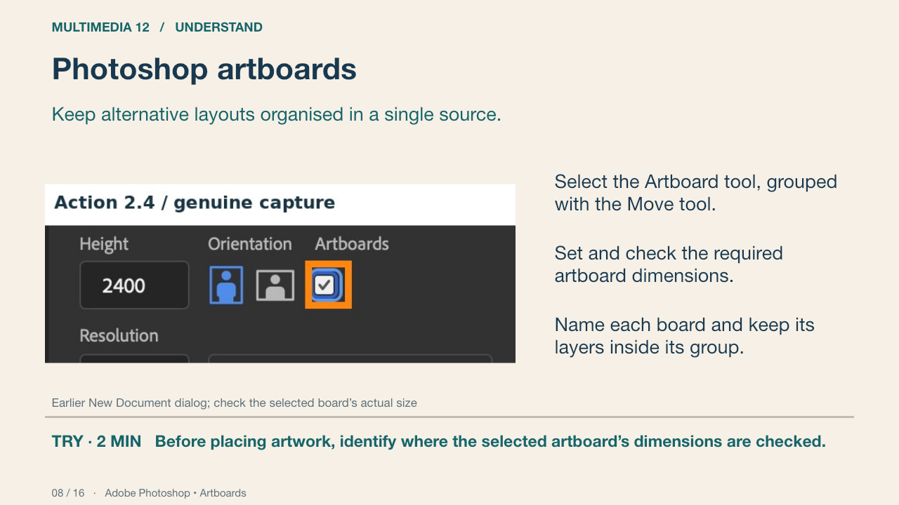
This genuine earlier Photoshop capture shows artboard controls. The linked Adobe procedure explains adding artboards; the capture does not prove a complete new workflow run. Check the selected artboard’s Properties values, not just the preset shown in the top bar. A visible rectangle alone does not prove the required dimensions.
Your turn: Before placing artwork, identify where the selected artboard’s dimensions are checked.
Success: The learner distinguishes the selected board’s dimensions from the tool’s next-board preset.
Adobe Photoshop • Artboards Primary source
9. Dimensions are a production decision
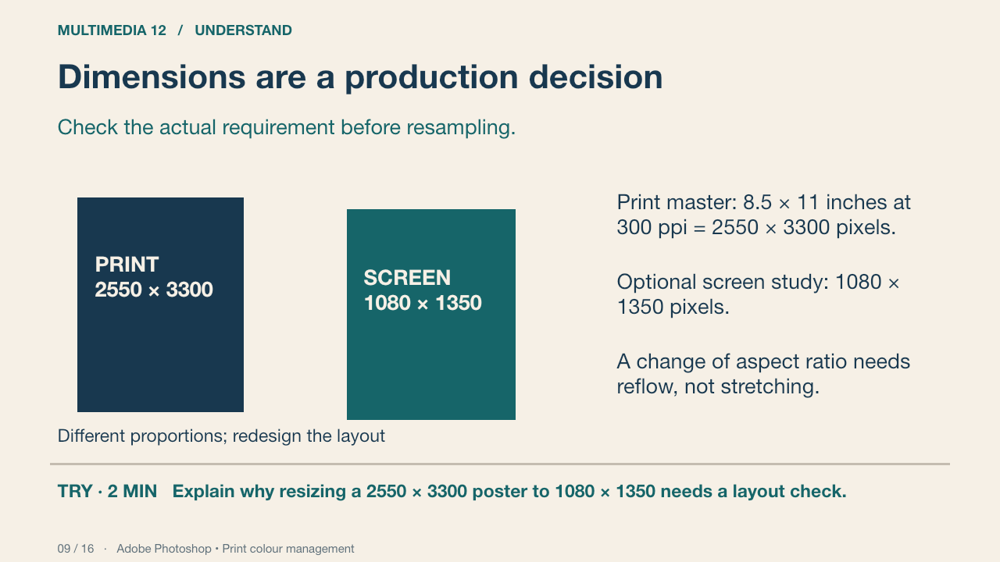
The print specification is this classroom brief, not a universal cinema-poster format. Multiplying inches by pixels per inch gives the target pixel dimensions. A screen image’s pixel dimensions determine its pixel count; changing PPI metadata alone does not add pixels. Confirm the actual print profile and device before converting colour modes.
Your turn: Explain why resizing a 2550 × 3300 poster to 1080 × 1350 needs a layout check.
Success: Name a visible feature, use the term accurately and connect it to audience or purpose.
Practice feedback — open after your attempt
The aspect ratios differ, so fitting may crop or require reflow. Stretching distorts images and type.
Adobe Photoshop • Print colour management Primary source
10. A viewer test that changes the design
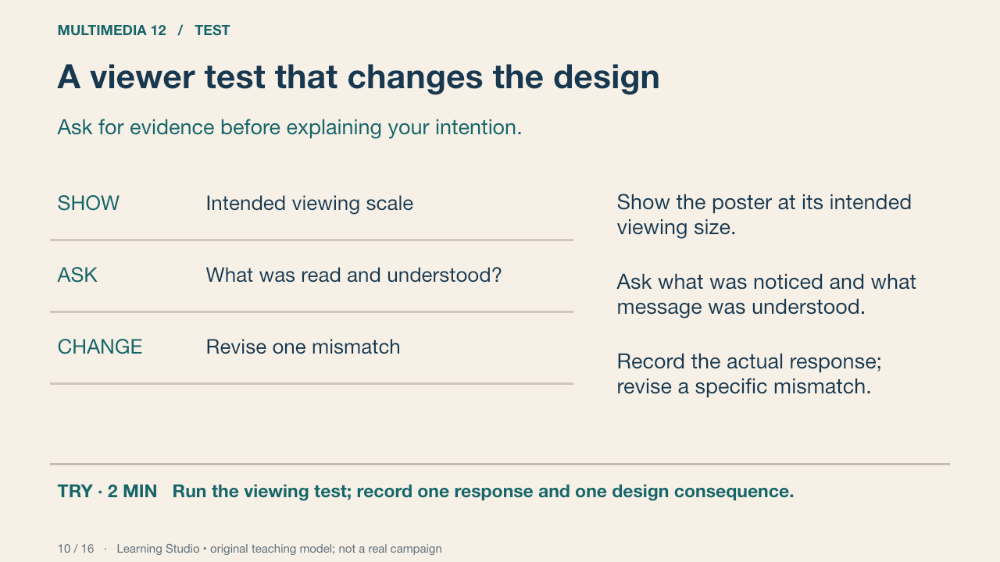
Two peer viewers can reveal useful problems, but they are not a representative audience sample. Avoid leading questions such as “does this look good?” Ask for the title, inferred event message and essential information. Retest after one targeted change.
Your turn: Run the viewing test; record one response and one design consequence.
Success: A real response, a precise mismatch or confirmation and a justified next action.
Learning Studio • original teaching model; not a real campaign
11. Source integrity and representation
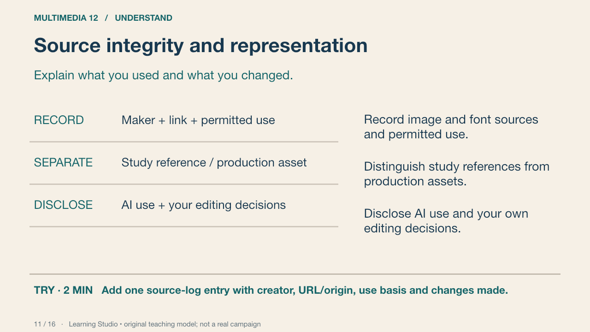
Use original or permitted production assets and keep creator information with the file. Consider whether a cultural symbol or portrayal changes the meaning for the intended audience. An AI-generated image is a source to evaluate and disclose; it is not evidence that the student planned or edited the design.
Your turn: Add one source-log entry with creator, URL/origin, use basis and changes made.
Success: Another person can trace the asset and understand its role.
Learning Studio • original teaching model; not a real campaign
12. Independent revision and defence
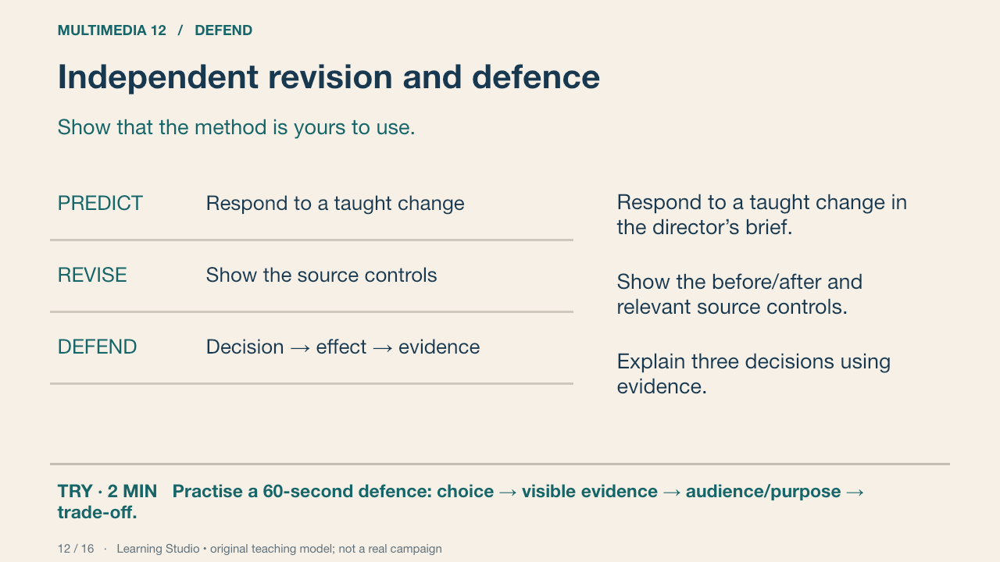
The teacher samples your product, source file, process record and explanation. During the independent change, record assistance separately from the quality of the demonstrated work. The student brief states the evidence and conditions; the private teacher guide supplies changed-brief choices without disclosing a solution.
Your turn: Practise a 60-second defence: choice → visible evidence → audience/purpose → trade-off.
Success: A concrete choice, visible evidence and a plausible compromise; the relevant source control can be located.
Learning Studio • original teaching model; not a real campaign
13. Deliver a usable package
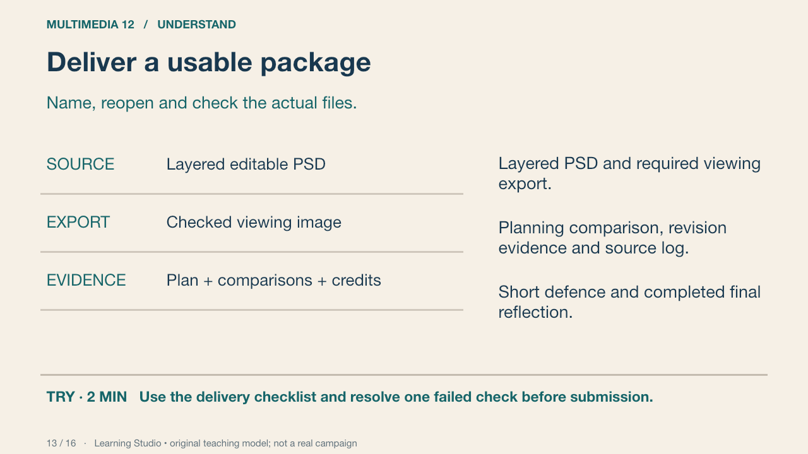
Use a clear versioned filename. Reopen the source and export and check dimensions, fonts, visibility and intended appearance. Exported image colours may depend on profiles and output conditions. Delivery is reliable when someone else can inspect the required evidence, not merely see a thumbnail.
Your turn: Use the delivery checklist and resolve one failed check before submission.
Success: Editable master and viewing image open; evidence is present; no private teacher material is included.
Learning Studio • original teaching model; not a real campaign
14. The Grade 12 target
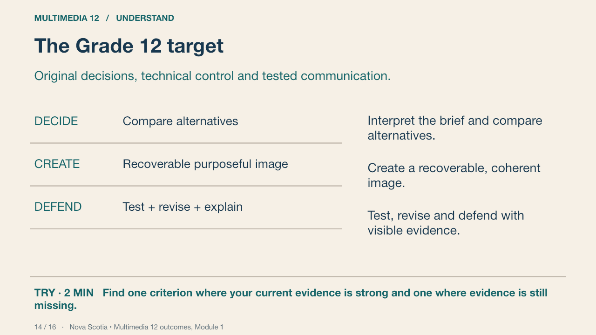
The public rubric describes communication, design decisions, recoverable technique, reference/context analysis, revision and delivery. Tutorial completion and a confidence rating do not determine achievement. A teacher considers the demonstrated evidence; supports are recorded separately.
Your turn: Find one criterion where your current evidence is strong and one where evidence is still missing.
Success: References actual work, not a self-awarded score.
Nova Scotia • Multimedia 12 outcomes, Module 1 Primary source
15. The later motion bridge
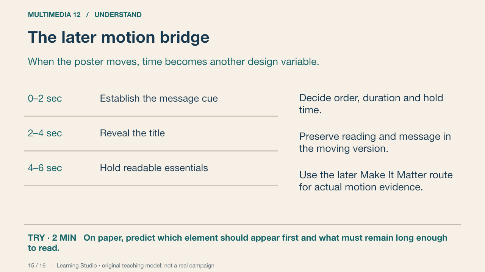
The four-class image project contributes to Module 1. A later animated message must actually demonstrate Module 2 methods and contextual analysis. Adding a music bed does not establish sound-production outcomes. This overview is a bridge; it does not claim to teach the full later motion unit.
Your turn: On paper, predict which element should appear first and what must remain long enough to read.
Success: A sequence linked to message and audience; no motion-achievement claim is made from a sketch alone.
Learning Studio • original teaching model; not a real campaign
16. Retrieve and return
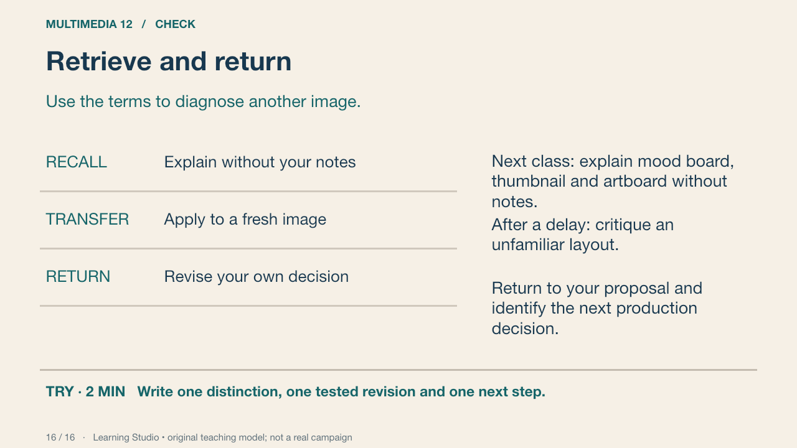
Retrieve the distinctions, compare with the accurate definitions and correct your response. The delayed task uses a fresh image and a changed viewing context. Your reflection names a next action rather than substituting confidence for evidence.
Your turn: Write one distinction, one tested revision and one next step.
Success: Accurate vocabulary, an actual revision and an achievable production action.
Learning Studio • original teaching model; not a real campaign